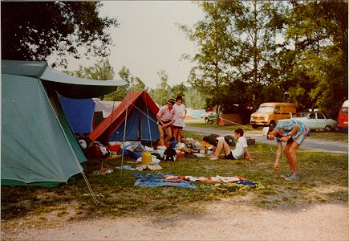
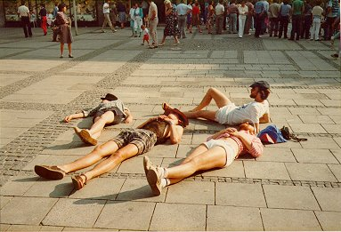
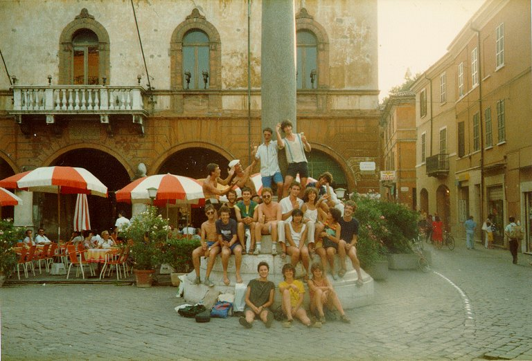

| |
|
Dus met deze gezellige groep besloten we die zomer een paar weken op toernee
te gaan.
(clockwise van links: Angelique Speltie, Paul Gieles, Christ de Jong, Trudy
Bok, Ernest van Breemen, Peter Jenniskens, Martijn Vercammen, Stefan Tax,
Frank Jenniskens)
Helaas, door een tik in de bus kwamen we vast te zitten in München...
(Paul, Trudy, Christ)
... dus besloten wij het ons daar gemakkelijk te maken.
(Christ)
's Avonds: bluegrass en whiskeyliederen bij het kampvuur.
(Mark Wijnands, Marie-Jose Zweekhorst, Paul, mijzelf)

Na 2 dagen: "Breek de tent maar af; we kunnen verder!"
1 uur later: "Zet maar weer op; we zitten nog een dag vast!"
Dan maar eens de stad in. Om te zingen in gewelfjes met mooie akoestiek...

...en te liggen op comfortabele pleinen.
(Margriet Wijffels, Peter, Ernest, Paul)
Ook in Münchener kroegen met literpullen slaat de bluegrass goed aan....
(mijzelf, Paul)
... en na veel problemen met de bus konden we eindelijk onze reis vervolgen.
(Martijn, Margriet, Evert, Peter)
Alles is onder controle; we weten precies waar we nu zijn: bij de arena van
Verona!
Let the show begin!
Verder naar Venetië, maar de bussen blijven vervelend doen.
Zelfs op de camping hebben de bussen moeite met het Venetiaanse zand.
Kan niet missen: een stelletje muziekfreaks op een camping.
Een repetitie. "Five Foot Two" onder de druivebladeren.
Fiedelen voor de San Marco leverde ongeveer 1000 Lire op ...
... net genoeg voor een ijsje.
's Avonds zaten we weer rond het kampvuur...
... nou ja, eigenlijk was het een gaslamp.
Frank kende "trekkersliedjes".
Daarna: snel door naar Ravenna. Intussen in de bus veel muziek ....
... en veel onzin.
Ravenna, beware: ESMG is there!

En hier is dan de hele groep.
Viool intermezzo tijdens het ESMG-optreden op een pleintje in Ravenna.

Nauwelijks uitgezongen kwam de politie ons weghalen.

Het laatste avondmaal.
Op de terugweg gingen de bussen steeds vervelender doen.
Dus toen nam ik toch maar afscheid van de groep; in Milaan werd ik opgepikt
door de Tuna Ciudad de Luz.
Trudy rijdt naar huis.
|
|